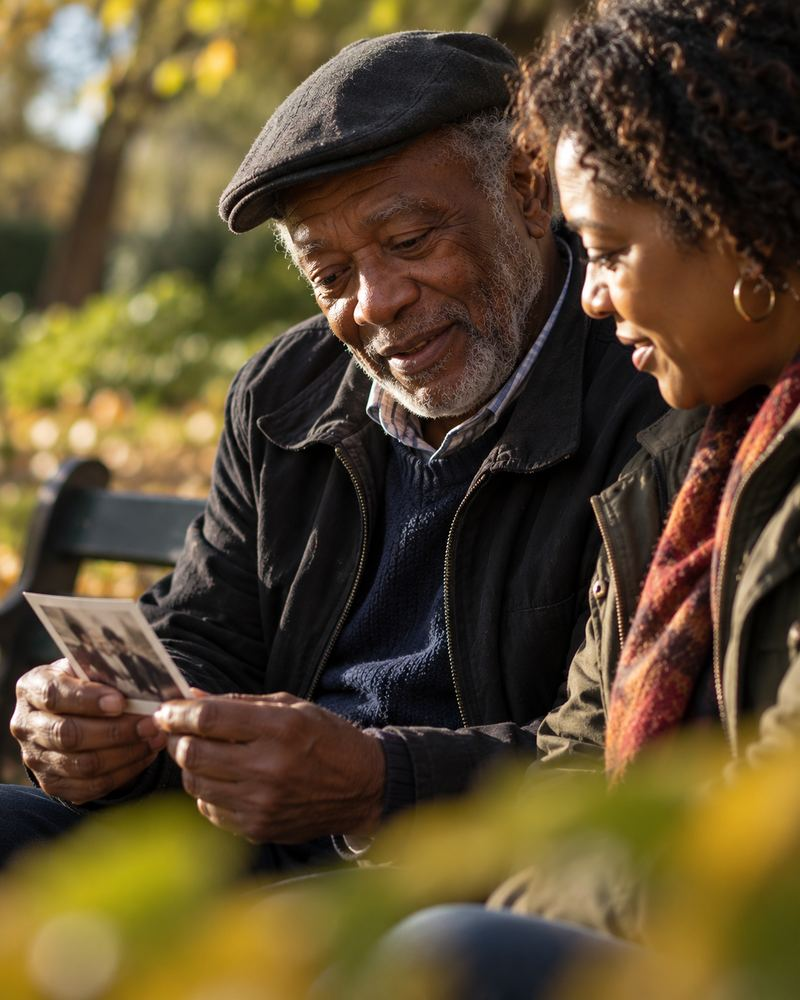
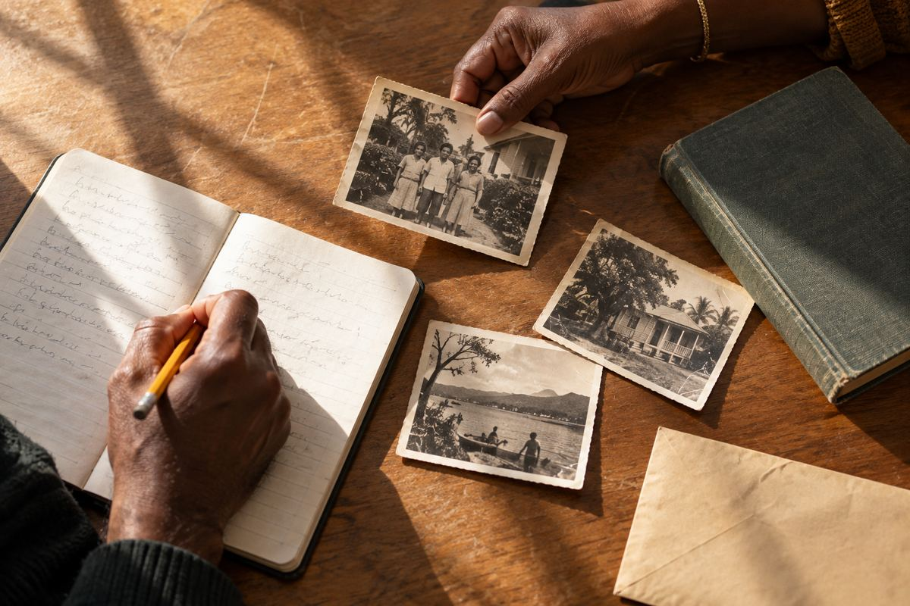

Starting your family tree
Five steps to begin your research and complete family history charts.
The five steps in a minute and a half
Your family tree
- Why do you want to trace it?
- Who could benefit from what you discover?
Five basic steps
Step 01
Write down what you know
What do I know?
- Search your own memory
- Ask family, friends and elders
- Look through family homes and Bibles
- Record details on pedigree charts and family group records

Step 02
Decide what you want to learn
What do I want to know?
Start with the generation closest to you. Work back one generation at a time.
Turn gaps in your knowledge into specific research questions.

Step 03
Choose a resource
Which resources?
Records and documents
Census, military and emigration records; microfilms; FamilySearch.org
People and objects
Relatives, family friends, photographs and tombstones
Step 04
Learn from the resource
What did I learn?
- Search the record
- Question or interview the person
- Study and copy details from the object
- Write down what you discover
Step 05
Use the information
- Evaluate and organise what you found
- Look for new clues
- Add it to your family tree or begin the five steps again
- Share it with relatives and other researchers
Completing charts
Pedigree charts and family group records
Record the details clearly
- Use a pencil until you are certain of the facts.
- Write confirmed information in pen.
- Write surnames in capitals: Gordon (given name), GORDON (surname).
- Use a three-letter month name to avoid date ambiguity.
For example, 04/05/1925 can mean 4 May or 5 April 1925.
Follow the numbering
Even numbers represent males
Odd numbers represent females
- 1 You
- 2 Father
- 3 Mother
- 4 Father’s father
- 5 Father’s mother
- 6 Mother’s father
- 7 Mother’s mother
Complete the nearest generation as fully as you can before moving back. Missing details can lead to the wrong tree.
Family group records
- Complete one record for each couple with children.
- Use “Other Spouses” to indicate additional children with another partner.
- Apply the same surname and date formatting rules.
Stuck? Bring it to a meeting
Bring your charts and your questions. Someone at the table has usually been stuck in the same place, and your first visit is free.
Next meeting Saturday 28 NovemberSolihull Core Library and Zoom